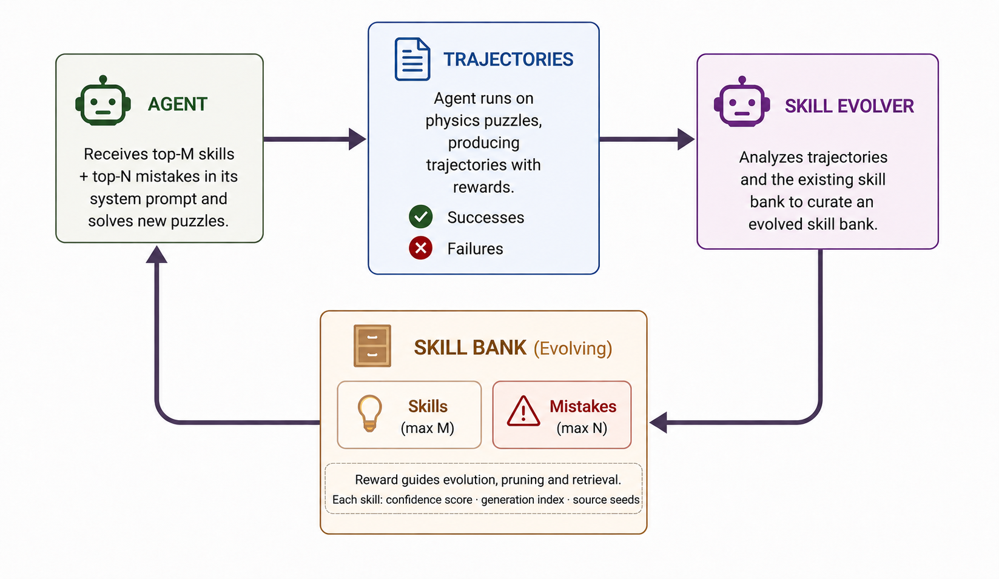

HExA (Hierarchical Experimentalist Agents) improves a frozen LLM agent through context alone. Three components alternate over rounds: an actor \(\pi_{\mathrm{act}}\) that experiments in the environment through tools, an evolver \(\pi_{\mathrm{ev}}\) that distils the resulting trajectories into a bounded skill bank \(\mathcal{K}\), and a retriever that injects the best skills and mistakes into the actor's next episodes. No model weights change at any point; the evolving bank is the only learning state.

A task family \(\ell\) has instances \((\ell, s_j)\), where each seed \(s_j\) fixes the geometry, parameters and initial conditions. Each family has a set of experimentation seeds \(\mathcal{S}_\ell\), on which the agent experiments and the bank is evolved, and a disjoint held-out set \(\mathcal{S}^{\mathrm{ev}}_\ell\) on which the resulting bank is evaluated. The actor interacts through an environment-provided tool interface \(\mathcal{F}\) (all InterPhyre tools) for at most \(T\) turns. At turn \(t\) it observes the history \(h_t=(a_0,o_0,\ldots,a_{t-1},o_{t-1})\) and selects a tool call
$$a_t \sim \pi_{\mathrm{act}}\!\left(\cdot \mid \ell, s_j, \mathcal{G}, h_t; \mathcal{F}\right), \qquad o_t = \mathrm{Env}(a_t),$$where \(\mathcal{G}\) is a skill context retrieved once at the start of the episode. The episode ends on a terminal action, a successful simulation, or after \(T\) turns, and success is a binary check of the final simulator state:
$$y_j = \mathbb{I}\!\left[\mathrm{Goal}_\ell\big(\mathrm{Sim}(\tau_j)\big)\right], \qquad \tau_j \sim \pi_{\mathrm{act}}(\cdot \mid \ell, s_j, \mathcal{G}).$$This definition is method-agnostic: skill-free baselines are simply the case \(\mathcal{G}=\emptyset\). For a fixed actor, HExA evolves only the bank \(\mathcal{K}\) to maximise expected success on future instances,
$$J_\ell(\mathcal{K}) = \mathbb{E}_{s\sim\mathcal{D}_\ell}\!\left[\, y\big(\pi_{\mathrm{act}};\ \ell,\ \mathrm{Retriever}(\mathcal{K},\ell,M,N)\big)\right], \qquad \Delta J_\ell^{\mathrm{HExA}} = J_\ell(\mathcal{K}_R) - J_\ell(\emptyset).$$The bank \(\mathcal{K}_R\) is useful exactly when the same frozen actor does better with it than without it on unseen instances.
Unlike in-context RL methods that meta-train a sequence model on RL histories, HExA needs no meta-training: it builds an explicit external state from the actor's own interaction. The bank induces an effective policy \(\pi_{\mathcal{K}}(a_t\mid\ell,s,h_t) := \pi_{\mathrm{act}}(a_t\mid\ell,s,\mathcal{G}_{\mathcal{K},\ell},h_t)\) whose parameters never change, but whose behaviour does as \(\mathcal{K}\) changes. Learning is online: data is not drawn from a fixed corpus but generated by the policy the current bank induces, closing the loop \(\mathcal{K}_{n-1}\rightarrow\pi_{\mathcal{K}_{n-1}}\rightarrow\mathcal{T}^{(n)}\rightarrow\mathcal{K}_n\). The trajectory reward \(r(\tau)\) is only an internal credit-assignment signal for building the bank, distinct from the task objective \(J_\ell\).
The inner loop adapts actions within an episode through hypothesis-driven experiments; the outer loop distils those experiments into the bank, which changes not only the actor's answers but which experiments it runs next. HExA therefore learns how to experiment, extending meta-in-context learning to interactive decision making — a non-parametric, history-conditioned form of meta-RL related to RL2, without meta-training or weight updates.
Experimentation seeds are processed in \(R=\lceil|\mathcal{S}_\ell|/x\rceil\) rounds of \(x\) episodes. At round \(n\) the retriever builds \(\mathcal{G}_n\) from the previous bank, the actor plays a fresh batch of seeds under that same \(\mathcal{G}_n\), and the evolver updates the bank from the new reward-tagged trajectories. Because \(\mathcal{T}^{(n)}\) is generated under \(\mathcal{K}_{n-1}\), every bank update changes the policy that collects the next round of experience. After the final round, \(\mathcal{K}_R\) is frozen.
Input: actor π_act, evolver π_ev, task family ℓ, initialization ∈ {empty, warm-start}, update ∈ {evolution, iterative replacement}, rounds R, episodes per round x, retrieval sizes M, N # Initialize the skill bank if warm-start: collect skill-free batch T₀ of x trajectories from π_act K₀ ← π_ev(∅, T₀) else: K₀ ← ∅ # Main loop: collect experience, then update the bank for n = 1 … R: G_n ← Retriever(K_{n−1}, ℓ, M, N) # top-M skills + top-N mistakes for i = 1 + x(n−1) … xn: τ_i ← π_act(· | ℓ, s_i, G_n) # task + tools + skills r(τ_i) ← Reward(τ_i) # outcome × efficiency if update = evolution: K_n ← π_ev(K_{n−1}, T⁽ⁿ⁾) # keep old bank, add new evidence else: K_n ← π_ev(∅, T⁽ⁿ⁾) # rebuild from this round only return K_R
Unless stated otherwise, “HExA” in our experiments is the reward-guided Off2On + Evolution variant (warm start, then evolution).
Trajectories differ not only in whether they solve the task but in how much experimental evidence they carry. Each trajectory gets a scalar \(r(\tau)\in[-1,+1]\) combining outcome and interaction efficiency. For InterPhyre, with \(t\) the number of turns used and \(T\) the budget:
| Outcome | Turns used | \(r(\tau)\) |
|---|---|---|
| Success | \(t \le 3\) | +1.00 |
| Success | \(4 \le t \le 7\) | +0.75 |
| Success | \(8 \le t \le 15\) | +0.50 |
| Success | \(16 \le t \le T\) | +0.25 |
| Failure | \(t \ge 10\) | −0.50 |
| Failure | \(t < 10\) | −0.75 |
Faster successes earn more. Among failures, trajectories that kept experimenting are penalised less than ones that gave up early, because they contain more evidence from which the evolver can recover partial skills or diagnose failure modes. The values are discrete because the reward is read by an LLM evolver as evidence, not optimised by gradient descent; the categories encode qualitatively different outcomes (fast success, slow success, extended exploration, early failure) that are easy to contrast.
The reward is an instantiation, not a requirement: any scorer works (environment reward, human feedback, an LLM judge, a learned reward model), and HExA can also run without reward labels, leaving trajectory quality to the evolver (labels help; see the reward ablation on the main page).
After each round the evolver receives the current bank and the batch \(\mathcal{T}^{(n)} = \mathcal{T}^{(n),+} \cup \mathcal{T}^{(n),-}\) of successful and failed trajectories, each with the actor's reasoning, tool calls, observations and reward.
Over the whole batch, contrast high-reward against low-reward trajectories to find which strategies, experimental choices or mechanistic insights separate effective from ineffective behaviour, and summarise them as a few strategy skills. Evidence is weighted by trajectory quality: principles backed by fast successes count more than ones inferred from marginal successes or partial evidence.
On the failed subset, extract mistake records \(\mu=(\delta,\rho,\alpha)\): a recurring failure \(\delta\), its root cause \(\rho\), and an actionable correction \(\alpha\). Also recover partial skills: correct intermediate discoveries inside failed episodes (e.g. the right mechanism or a promising parameter region), so a failure is not treated as uninformative.
Because later rounds are generated while conditioned on earlier skills, new evidence can refine an earlier principle, narrow where it applies, combine it with complementary discoveries, or replace it when contradicted. We call this repeated refinement and composition skill evolution.
The bank is indexed by task family and holds two collections: strategy skills \(\mathcal{K}^{\mathrm{sk}}\) and mistake records \(\mathcal{K}^{\mathrm{mis}}\). Unlike episodic memory it stores no raw trajectories; it compresses repeated experimental evidence into abstractions with explicit applicability conditions.
A real strategy skill and mistake record from the frozen catapult bank used for held-out seed 64 in the paper:
Each skill's score comes from the mean reward \(\bar r_{\mathrm{src}}\) of the trajectories it was distilled from:
$$r_k = \operatorname{clamp}\!\left(\frac{\bar r_{\mathrm{src}} + 1}{2},\ 0.1,\ 1.0\right).$$Skills backed by efficient successes score high; skills recovered from weaker or partial evidence can stay in the bank with lower scores. The score drives both retrieval order and what is kept or pruned when the bank is full.
Each task family holds at most \(M_{\max}\) skills and \(N_{\max}\) mistakes: \(|\mathcal{K}^{\mathrm{sk}}|\le M_{\max}\), \(|\mathcal{K}^{\mathrm{mis}}|\le N_{\max}\). Experience can grow without limit, but the representation the actor sees stays compact, which forces the evolver to consolidate, revise or drop redundant entries as evidence accumulates.
At the start of an episode the retriever selects the top-\(M\) skills by \(r_k\) and the top-\(N\) mistakes for the task family, \(\mathcal{G}=\mathrm{Retriever}(\mathcal{K},\ell,M,N)\), and adds them as a structured block to the actor's system prompt, next to the unchanged task description and tool documentation. The actor need not follow a skill verbatim: skills are reusable hypotheses, applicability conditions and failure warnings it can use or ignore. Only the text context changes — not parameters, architecture, decoding or the environment — so the same mechanism works for open-weight and API-only models.
The loop admits variants along two axes, which separate the benefit of warm-starting from that of cumulative evolution.
| Initialization \(\mathcal{K}_0\) | Static | Evolution \(\pi_{\mathrm{ev}}(\mathcal{K}_{n-1},\mathcal{T}^{(n)})\) | Iterative replacement \(\pi_{\mathrm{ev}}(\emptyset,\mathcal{T}^{(n)})\) |
|---|---|---|---|
| Offline: distil a skill-free warm-start batch \(\mathcal{T}_0\), then hold fixed | Offline Static | – | – |
| Off2On: same warm start, then keep updating | – | Off2On Evolution (HExA default) | Off2On Iterative Replacement |
| Online: start empty, \(\mathcal{K}_0=\emptyset\) | – | Online Evolution | Online Iterative Replacement |
Evolution gives the evolver the previous bank, so it can add skills, merge corroborating evidence, revise applicability conditions, or remove contradicted entries. Iterative replacement rebuilds the bank from the latest batch only; those trajectories still reflect earlier skills implicitly, but the bank itself is not passed on. Evolution guards against skill drift, where rebuilding from a small recent batch discards broadly useful principles in favour of strategies specific to the latest instances.
Mechanisms such as momentum transfer, contact geometry, lever mechanics and collision order, and procedural search strategies, need not be tied to one task's coordinates or objects. Given evolved source banks \(\mathcal{K}_{\ell_1},\ldots,\mathcal{K}_{\ell_S}\) and only a textual description of an unseen target \(\ell^*\), a transfer evolver synthesises a target bank with no target-task trajectories:
$$\mathcal{K}_{\ell^*} = \pi^{\mathrm{tr}}_{\mathrm{ev}}\!\left(\{\mathcal{K}_{\ell_i}\}_{i=1}^{S},\ \mathrm{desc}(\ell^*)\right), \qquad \mathcal{T}_{\ell^*}=\emptyset.$$The evolver is explicitly told not to invent target-specific coordinates or solutions unsupported by the source banks and the description; transferred entries are general mechanisms with conditions for when they apply. The synthesised bank can be used in two ways: injected directly for zero-shot transfer, or used as \(\mathcal{K}_0\) for a subsequent within-task HExA run that refines it with target evidence.
Hierarchy. Skills are hierarchical in two operational senses: distillation abstracts many low-level tool calls and parameter settings into one principle with applicability conditions, and later skills are learned while the actor already uses earlier ones, so they refine, delimit, merge or replace them. The bank is not an explicit tree; its hierarchy emerges from repeated abstraction and composition across rounds and tasks.
At evaluation the actor runs on the held-out seeds \(\mathcal{S}^{\mathrm{ev}}_\ell\) with the same \(T\)-turn budget as during bank construction, using either the frozen within-task bank \(\mathcal{K}_R\) or a synthesised bank \(\mathcal{K}_{\ell^*}\). Each seed starts from a fresh copy of the bank, and nothing carries over between evaluation seeds.
The skill context is retrieved once at the start of the episode and kept fixed; the bank is never modified during or between episodes, and the evolver is not called.
After every turn the evolver refines a seed-local copy of the bank from the interaction so far, \(\mathcal{K}_{j,t+1}=\pi_{\mathrm{ev}}(\mathcal{K}_{j,t},h_{t+1})\), so the agent can confirm, narrow or drop a skill as soon as an experiment contradicts it. It uses no extra environment turns, and the copy is discarded at the end of the episode.
In every environment the training and evaluation instances are disjoint, memory baselines build their memory on the same training instances as HExA, and every method is scored on the same held-out instances with a frozen bank or store. Warm start is the number of instances played by the base actor with an empty bank and distilled into the initial bank; training is rounds × instances per round.
| Environment | Warm start | Training | Held-out eval |
|---|---|---|---|
| InterPhyre (each level) | 5 | 51 (17 × 3) | 50 |
| Mastermind | 10 | 70 (7 × 10) | 40 |
| Maze (gpt-oss-120b) | 10 | 190 (19 × 10) | 243 |
| Reasoning & planning (each task) | 2 | 58 (29 × 2, 10 attempts) | 100 |
DiscoverPhysics oscillator, circle | 5 | 15 (5 × 3) | 15 |
| Transfer (no target-task trajectories) | |||
| InterPhyre cross-level | source-level banks | 50 | |
| Games cross-task | Wordle 10 + 120, Minesweeper 10 + 190 | 40 / 243 | |
DiscoverPhysics hubble | 18 | 24 (8 worlds × 3) | 15 |